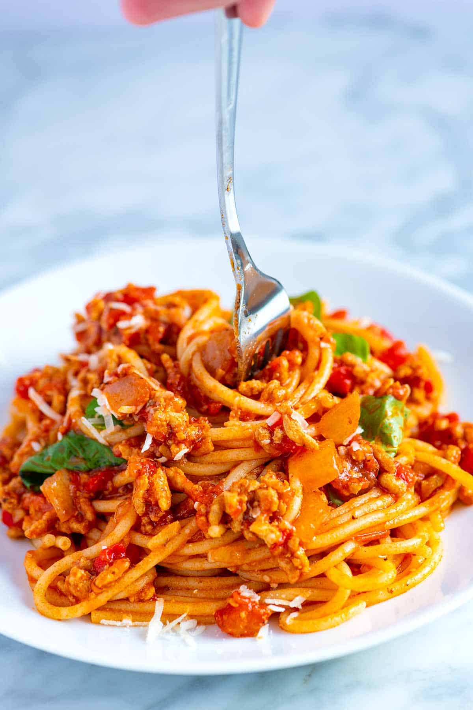

How to make Spaghetti

Description
My family’s favorite weeknight friendly spaghetti recipe is quick and simple. The super flavorful spaghetti sauce is ready in 45 minutes and you can use your favorite ground meat to make it (beef, turkey, and chicken are all excellent).
Ingredients
- Spaghetti
- Ground meat
- Tomatoes and tomato paste
- Onion, garlic, and spices
Steps
- Brown the meat: Heat the oil in a large pot over medium-high heat (we use a Dutch oven). Add the meat and cook until browned, about 8 minutes. Use a wooden spoon to break the meat into smaller crumbles as the meat cooks.
- Build the sauce: Add the onions and cook, stirring every once in a while, until softened, about 5 minutes. Stir in the garlic, tomato paste, oregano, and red pepper flakes and cook, stirring continuously for about 1 minute.
- Add liquid and tomatoes: Pour in the water and use a wooden spoon to scrape up any bits of meat or onion stuck to the bottom of the pot. Stir in the tomatoes, ¾ teaspoon of salt, and a generous pinch of black pepper.
- Simmer: Bring the sauce to a low simmer. Cook uncovered for 25 minutes. As it cooks, stir and taste the sauce a few times so you can adjust the seasoning accordingly (see notes for seasoning suggestions).
- Cook spaghetti: About 15 minutes before the spaghetti sauce finishes cooking, bring a large pot of salted water to a boil. Then, cook the pasta according to the package directions, but check for doneness a minute or two before the suggested cooking time. Drain.
- To serve: Remove the sauce from the heat and stir in the basil. Toss in the cooked pasta and leave for a minute so that it absorbs some of the sauce. Toss again, and then serve with grated parmesan cheese on top.
Back